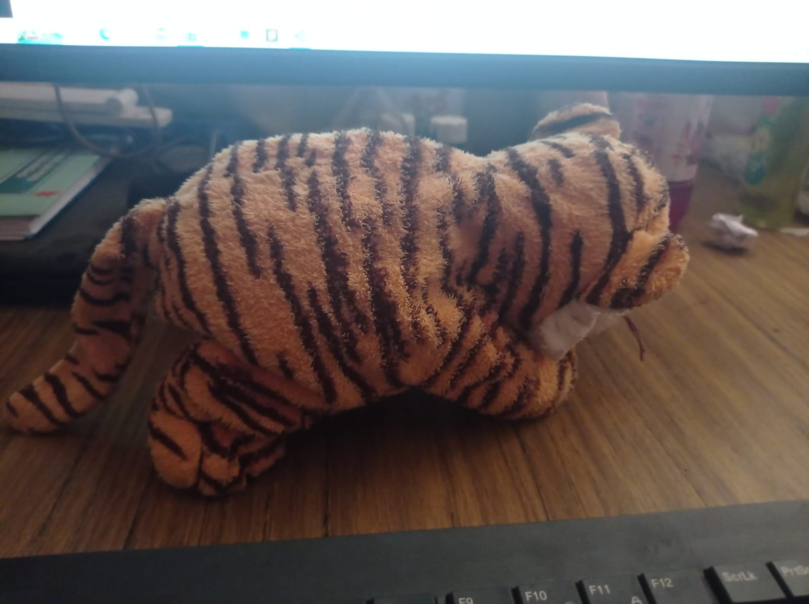
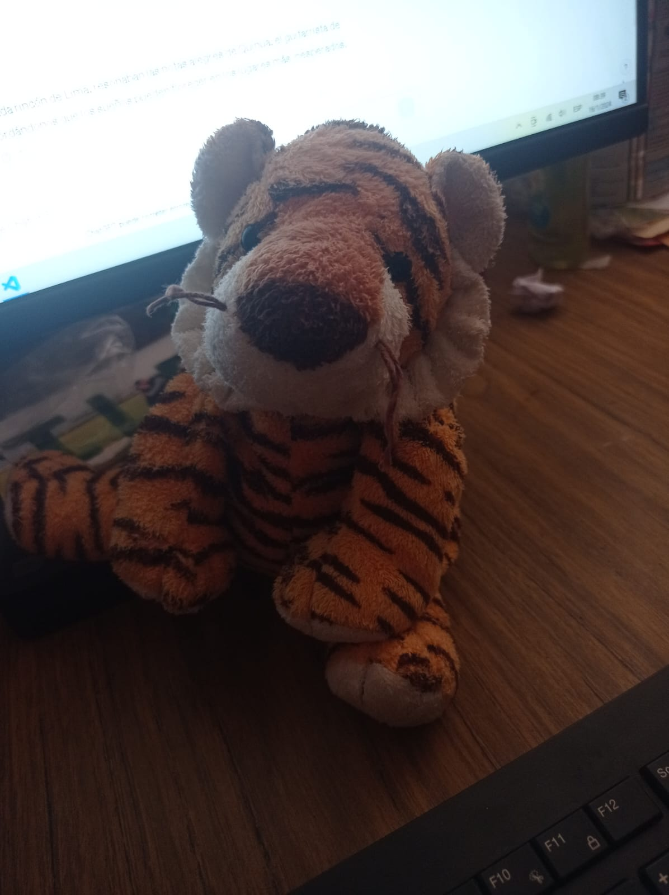
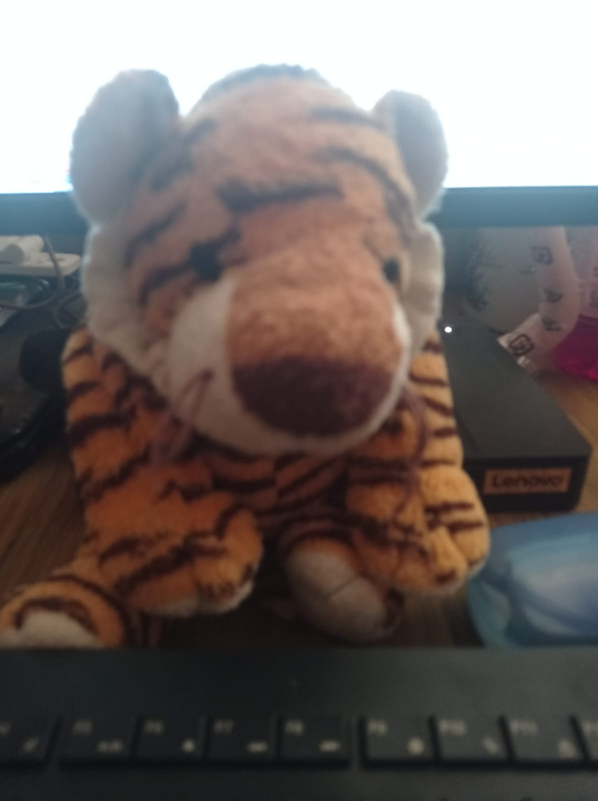

La vida de Tomi
En una soleada mañana de enero de 2024, nació Tomi, el Tigre Amarillo, en las exuberantes tierras de Perú. Desde sus primeros días, su pelaje resplandecía con un tono dorado y amarillo, haciendo que fuera imposible pasar desapercibido en la densa jungla. Tomi no era un tigre común. Desde joven, su corazón latía al ritmo de impulsos eléctricos y líneas de código. Su sueño era tan inusual como inspirador: quería ser un programador. Mientras sus compañeros felinos se dedicaban a la caza y el juego, Tomi se sumergía en el fascinante mundo de la tecnología.

Fernanda, su dueña y compañera de aventuras, notó la curiosidad única de Tomi. A medida que exploraban la selva juntos, Tomi se detenía frente a cualquier rastro de tecnología, sus ojos brillando con la promesa de un mundo digital por descubrir. Fernanda, una apasionada guitarrista y jugadora de baloncesto, alentó el inusual sueño de su amigo felino. Las noches en las que la jungla se sumía en la oscuridad, Tomi se sentaba junto a Fernanda mientras ella tocaba su guitarra. La música se convirtió en la musa de sus pensamientos codificadores, inspirándolo a buscar soluciones creativas a problemas imaginarios.

Con el tiempo, Tomi comenzó a estudiar por sí mismo. Observaba con atención a Fernanda mientras interactuaba con sus dispositivos, y en las horas tranquilas de la noche, se aventuraba a explorar el vasto mundo de la programación. Con astucia felina y perseverancia, comenzó a escribir sus propios códigos, trazando un camino único hacia su sueño. La historia de Tomi, el TigreAmarillo del Código, se convirtió en un cuento inspirador en la jungla. Su sueño no solo desafiaba las expectativas, sino que también demostraba que, independientemente de la forma o el pelaje, todos pueden encontrar su propio camino hacia la realización de sus aspiraciones más audaces.